Vježba 1
U vježbi broj 1 zadatak je bio osmisliti te dizajnirati neki font. Koristili smo se programima Fontographer ili FontForge.
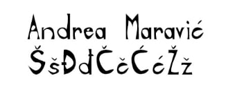
Vježba 2
U drugoj smo vježbi trebali iskoristiti font iz prethodne vježbe, te u programu Adobe Illustrator napraviti masku koristeći i Bezierove krivulje.
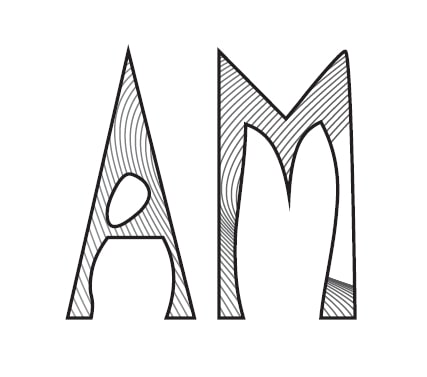
Vježba 3
U ovoj smo vježbi U Illustratoru crtali krivulje prema predlošku, dodavali boji i prozirnost, te se koristili Rotate toolom.
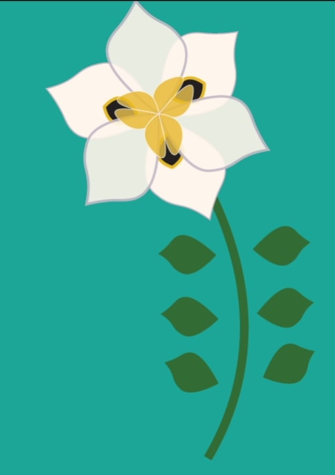 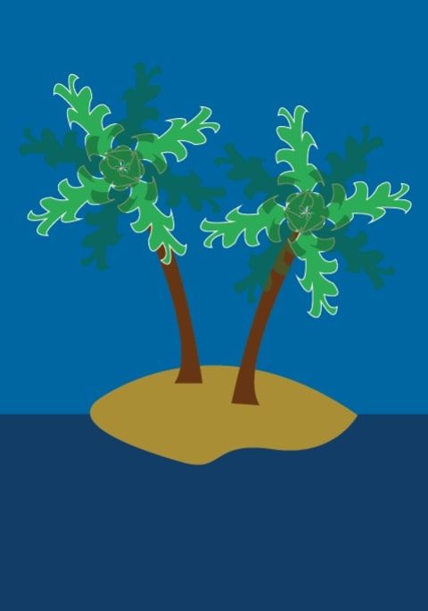
Vježba 4
U 4. vježbi smo se upoznali alatima Gradient te Mesh Gradient, kojima se postiže trodimenzionalnost objekta.
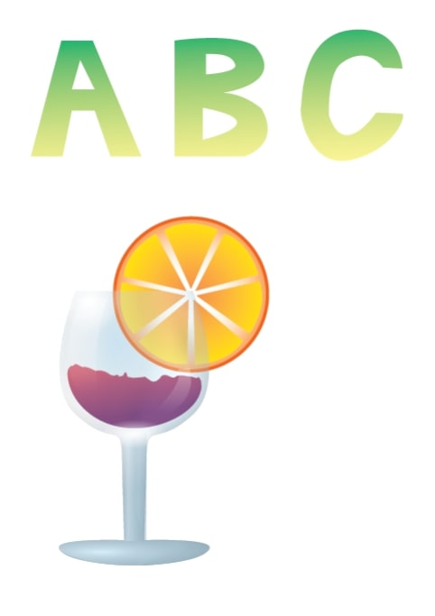
Projektni zadatak 1
U projektnom zadatku trebali smo spojiti sve tehnike i alate koje smo naučili u prethodnim vježbama!

Vježba 5
U vježbi broj pet krenuli smo s radom u Adobe Photoshopu te se počeli baviti osnovnim tehnikama retuširanja.
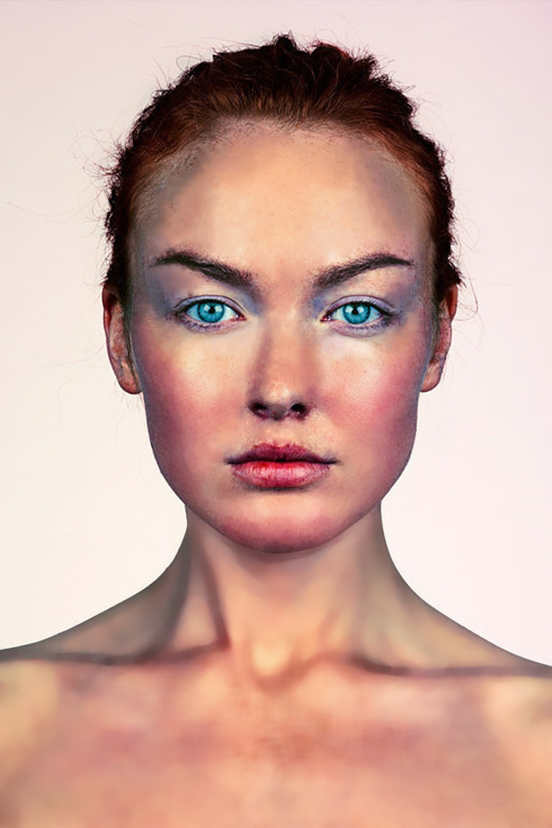
Vježba 6
U ovoj smo se vježbi bavili koloriranjem selekcije neke fotografije, upoznali smo se s fukcijama Channels panela.
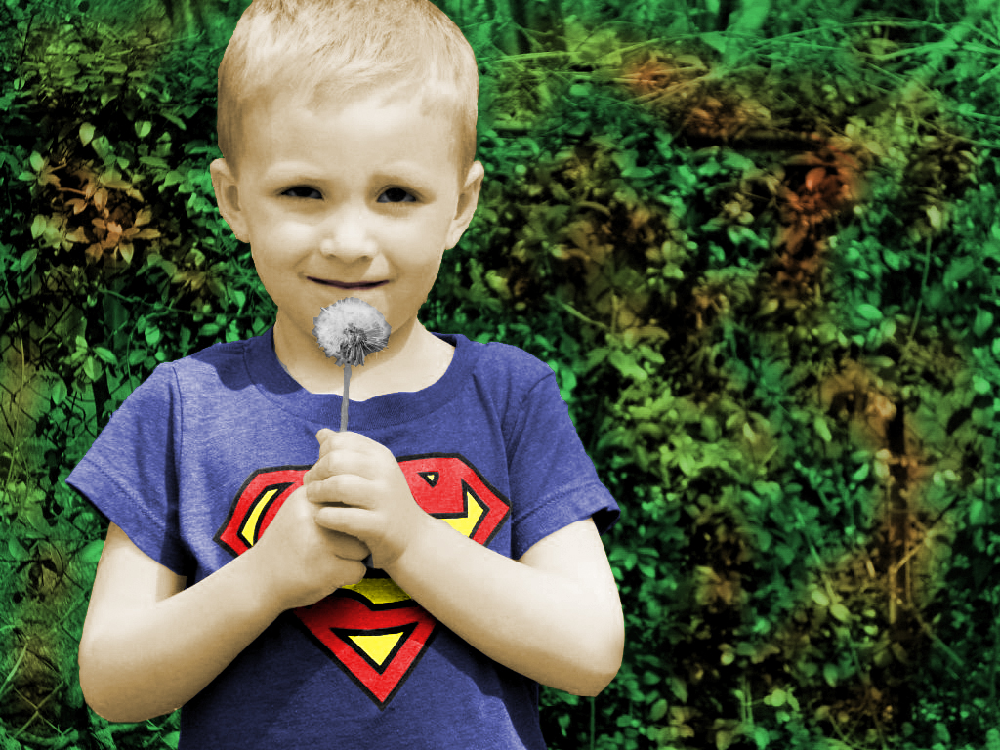 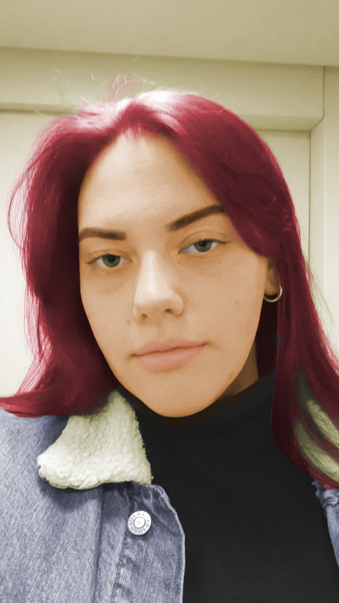 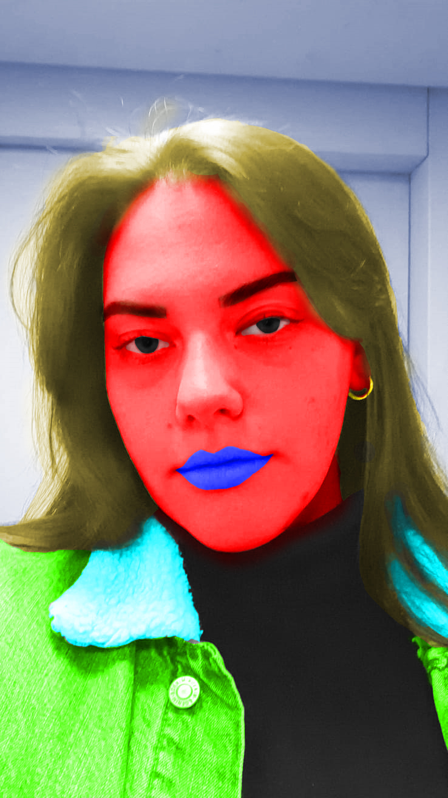 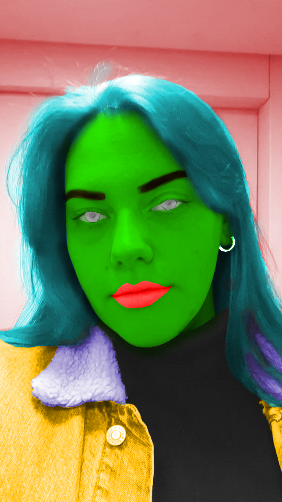 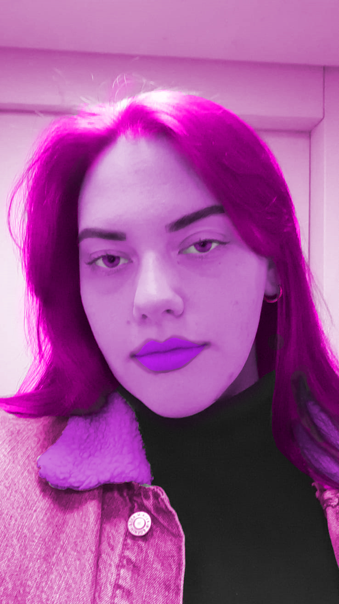 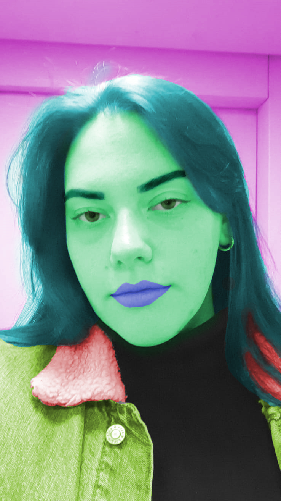
Vježba 7
U 7. vježbi smo se bavili fotomontažom, selekcijom, maskama i korekcijom boja.
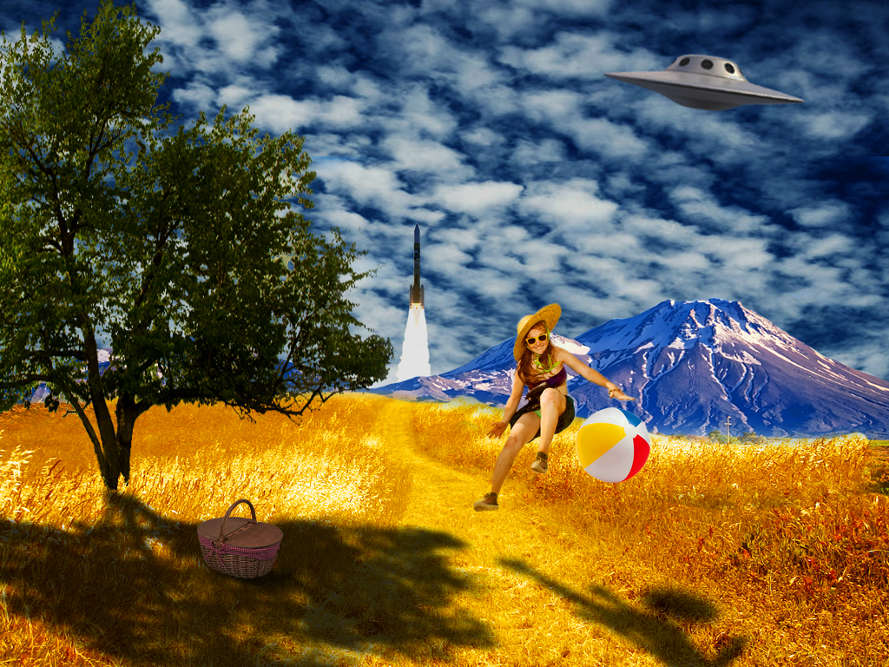
Projektni zadatak 2
U projektnom zadatku trebali smo spojiti sve tehnike i alate koje smo naučili u prethodnim vježbama!
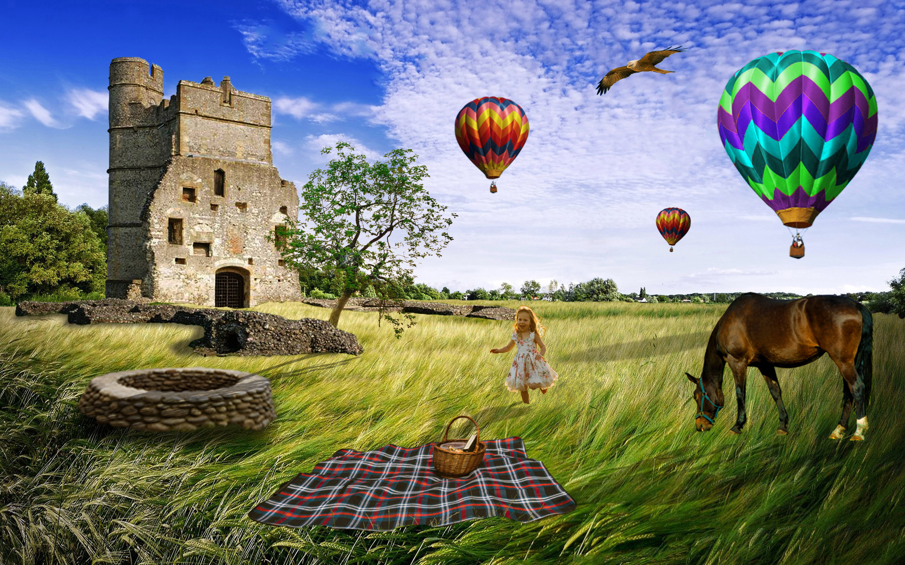
Vježba 8
Ovo je bila prva vježba uređivanja video materijala, a koristili sam se programima Olive i Photoshop. Zadatak je bio stvariti kinemagraf.

Vježba 9
U 9. vježbi smo se bavili uređivanjem video materijala, dodavanjem teksta i efekata.